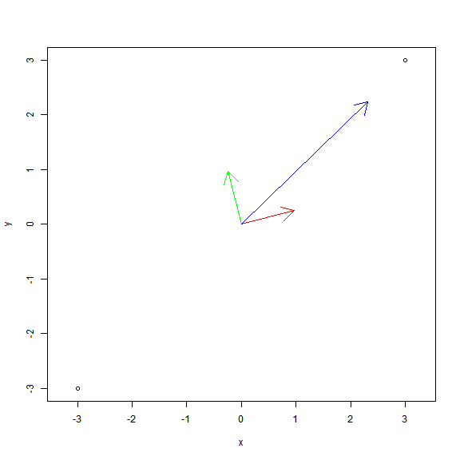

In this module, we introduce operations on vectors that have no one-dimensional counterparts: the dot and cross products. Each of these has great physical and mathematical significance, and each is essential for our understanding of the calculus of functions of several variables.
To undertake this study, we must have a good command of the flat subspaces of \(\mathbf{R}^3\)—that is, the lines and planes. The first unit of the course ends with the classification of planes, discussed in the next module. The typical approach to the classification of lines is more involved, and is deferred until after our discussion of parametrized curves. We will classify the lines indirectly in the special case of \(\mathbf{R}^3\) (as opposed to higher-dimensional Euclidean spaces) after we complete the classification of planes.
Not all vectors represent displacements; physics abounds with examples. The quantities that vectors do represent all have something in common: a simple magnitude is not enough to specify them; a direction is needed as well.
For the idea of magnitude, we have a workable definition: a nonnegative real number. In a one-dimensional space, we have escaped the need to discuss direction by sneakily calling one “positive” and one “negative”, so that it appears to the untrained eye that magnitudes alone suffice. But the student of vectors knows better, and says that \(+1\) and \(-1\) really are directions, in which we may move along a vector of any desired magnitude.
How many directions, then, are there in a 2-dimensional space? or 3-dimensional space?
Let us proceed with the analogy that the list of “directions” in the line is the set \(\{ \pm 1 \}\). Multiplying either of these directions by a nonnegative real number generates the totality of vectors in \(\mathbf{R}^1\)—which is to say, real numbers dressed up in angle brackets.
We may decompose a 1-dimensional vector into a magnitude and a direction as follows.
\[ \langle x \rangle = \lvert x \rvert \left\langle \frac{x}{\lvert x \rvert} \right\rangle \]
The nonnegative number \(\lvert x \rvert\) is the magnitude, while \(\dfrac{x}{\lvert x \rvert}\) is a direction. Observe that, if \(x \ne 0\) the direction is an element of \(\{ \pm 1 \}\), as advertised. We call this set the unit vectors or directions of \(\mathbf{R}^1\).
Guided by these notions, let us now consider a general vector in \(\mathbf{R}^2\). So far, we only have one way of specifying such a vector. We write it in coordinates, say \[ \vec{v} = \langle v_1, v_2 \rangle. \] If we attempt to break down \(\vec{v}\) as above, we run into a problem right away: we have not defined “absolute value” of a vector. Yet all is not lost: we are in possession of a mapping that, for each vector, returns a nonnegative real number, namely the modulus or magnitude operator. \[ \lVert \vec{v} \rVert = \sqrt{v_1^2 + v_2^2} \]
What happens if we break down a vector like this: \(\vec{v} = \lVert \vec{v} \rVert \frac{\vec{v}}{\lVert \vec{v} \rVert}\)?
It is true that dividing a vector by a real number is an operation we have not defined, but once we recall that division should coincide with multiplication by the inverse, all becomes clear. Inside the parentheses, notice that a vector, namely \(\vec{v}\) is being multiplied by a number, namely \(\lVert \vec{v} \rVert^{-1}\).
\[ \vec{v} = \lVert \vec{v} \rVert \left(\frac{1}{\lVert \vec{v} \rVert} \vec{v} \right) \]
This is evidently a decomposition of an arbitrary vector \(\vec{v}\) into two parts: a nonnegative real number and a direction vector, just as in the 1-dimensional case.
The vector \(\vec{v}/\lVert \vec{v} \rVert\) is called the unit vector in the direction of \(\vec{v}\), or just the direction vector of \(\vec{v}\), for short. Our textbook calls this vector \(\mathbf{e}_{\mathbf{v}}\). While nonstandard, this notation is not terribly unconventional.
Exercise. Prove that \[ \left \lVert \frac{\vec{v}}{\lVert \vec{v} \rVert} \right \rVert = 1,\] for every nonzero vector \(\vec{v}\). Hint. Compute the LHS, for \(\vec{v} = \langle v_1, v_2 \rangle\).
The result of the above Exercise explains why such vectors are called unit vectors. The upshot is that we now have a complete list of the different “directions” in the plane \(\mathbf{R}^2\): they are in one-to-one correspondence with the vectors in \(\mathbf{R}^2\) of length 1.
Exercise. Picture the collection of all unit vectors in the plane, all in standard position. What curve do the heads of these vectors lie on?
Exercise. Formulate and carry out the analogous decomposition for vectors in \(\mathbf{R}^3\).
We are so used to the Cartesian system of coordinates that we identify without question the vector \(\vec{v}\) with its Cartesian coordinates, \[ \vec{v} = \langle v_1, v_2, v_3 \rangle. \] If we adopt the physicists’ tradition of writing \(\hat{\imath} = \langle 1, 0, 0 \rangle\), \(\hat{\jmath} = \langle 0, 1, 0 \rangle\), \(\hat{k} = \langle 0, 0, 1 \rangle\), we see immediately that we may express \(\vec{v}\) equally well as a sum: \[ \vec{v} = v_1 \hat{\imath} + v_2 \hat{\jmath} + v_3 \hat{k} . \] This expresses the vector \(\vec{v}\) as a sequence of directed distances, in the preferred coordinate directions.
But what if we wish to express \(\vec{v}\) in terms of directions other than the standard coordinate directions? After all, there are many from which to choose. For example, we might ask to decompose the blue vector below as a sum of directed distances in the red and green directions. One physical situation in which this problem is important is when we are pulling an object with blue force along a ramp with red inclination. We need to find “how much” of the force is pulling against gravity (red) and how much is just pulling against the ramp (green).

If we call the red direction \(\hat{u}_1\) and the green direction \(\hat{u}_2\), we are then asking for nonnegative real numbers \(a_1\) and \(a_2\) such that
\[ \vec{v} = a_1 \hat{u}_1 + a_2 \hat{u}_2. \]
The algebraic mechanism by which we obtain \(a_1\) and \(a_2\) is the dot product.